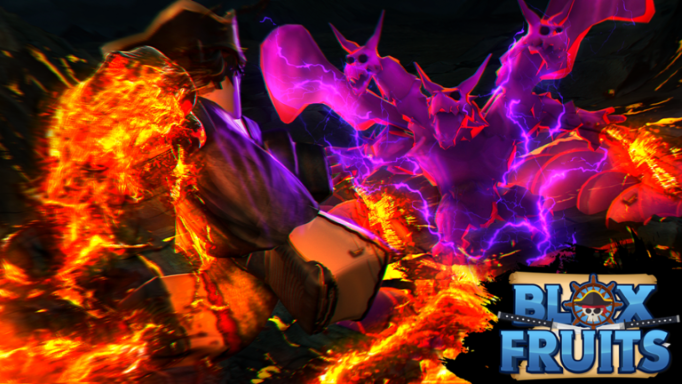
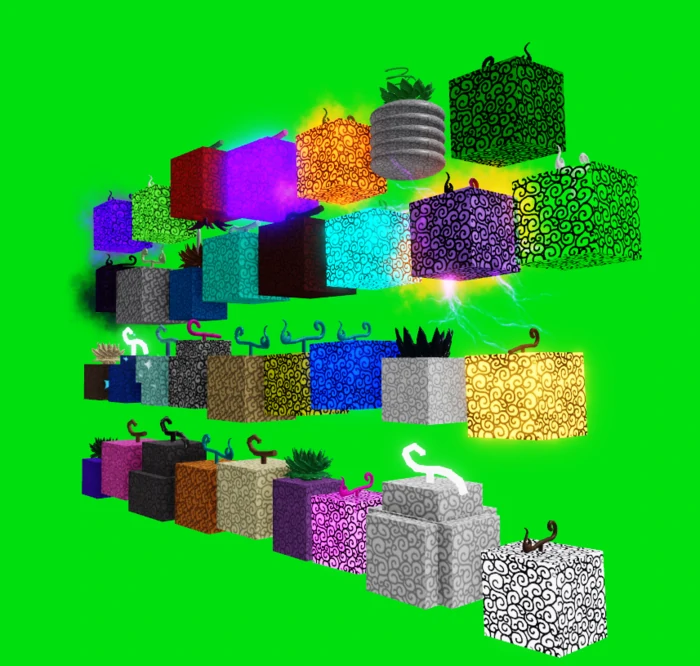
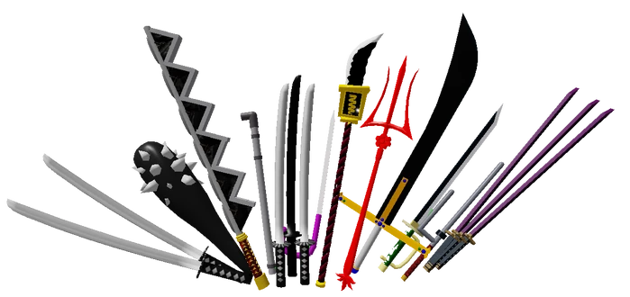

About Blox Fruits
Blox Fruits is a combat-based game in Roblox based on Blox Fruits. You can play the game here.
It is a game based on the famous manga One Piece.
In this game, there are mainly 4 ways of fighting.

Fighting Styles
There are currently ten fighting styles in the game (Combat, Dark-Step, Electric, Water Kung Fu, Dragon Breath, Superhuman, Death Step, Sharkman Karate, Electric Claw and Dragon Talon). Players need to buy Fighting Styles from NPCs in the game. The power of Fighting Styles depends on a player's "Melee" stats and a player's "mastery" on the fighting style itself.
All fighting styles have 2-4 moves and a M1 click mechanic.
Fruits

As of Update 17 Part 2 there are 33 fruits in the game. 21 of them are Natural, 8 of them are Elemental, and 4 of them are Beast. There are multiple ways of getting fruits in the game, including buying fruits with beli (ingame money), doing events like factory raids and ship raids and finding them on the ground.
Falling into a body of water while having a Blox Fruit (except for fruits which gives the ability to walk on water) will cause the player to take a lot of damage in a short span of time.
Most fruits do not have a M1 click mechanic except for the Light, Ice and Phoenix Awakened fruits. All fruits have 2-5 moves not counting M1s.
Swords

Swords can be obtained from Bosses, Sword Sellers, Legendary Sword Dealer, NPCs or by Robux. Normally sword moves have 10 and 15 seconds cooldown (Z and X). All swords have two moves.
Swords CANNOT damage Chop users, even with Buso Haki.
All swords have a M1 click mechanic.
Guns

Guns can be obtained from Bosses, Gun Dealers and the Factory raid. They need to reload and need to aim for clicks. Some guns have faster shooting speed, and others slower. Kabucha is the fastest gun in the game. Guns only have two abilities, similar to swords.
Guns cannot damage Rubber users.